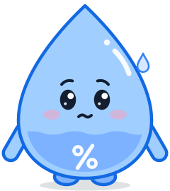

Memeriksa sensor
RINTIK membandingkan bacaan sensor kelembapan dengan estimasinya, hari demi hari. Hari dengan selisih besar atau bacaan yang macet ditandai agar petugas memeriksa perangkatnya.
- Sehat
- Waspada
- Dugaan malfungsi
- Data kurang
Ambang penilaian masih tahap demo dan belum dikalibrasi untuk lokasi lain. Anggap sebagai petunjuk awal, bukan vonis.
Buka Pemeriksaan